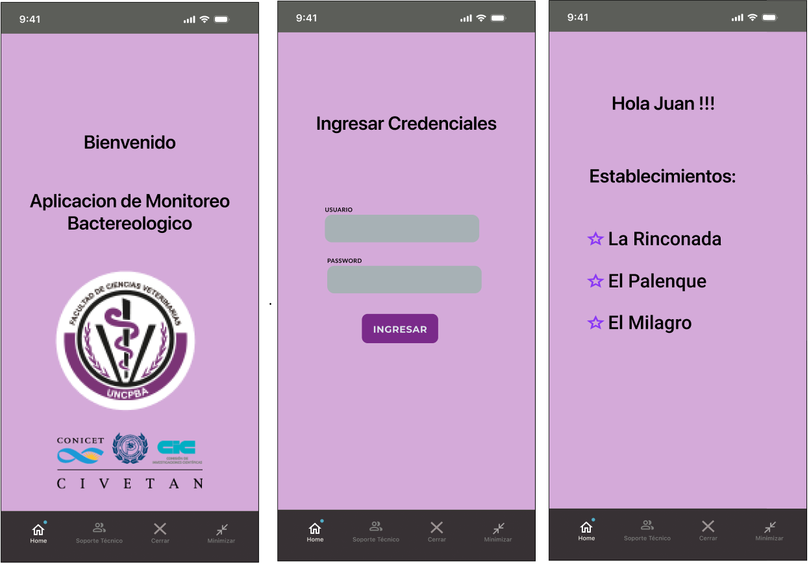
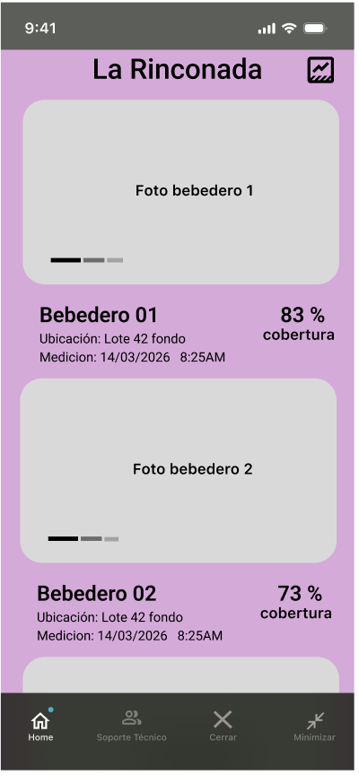
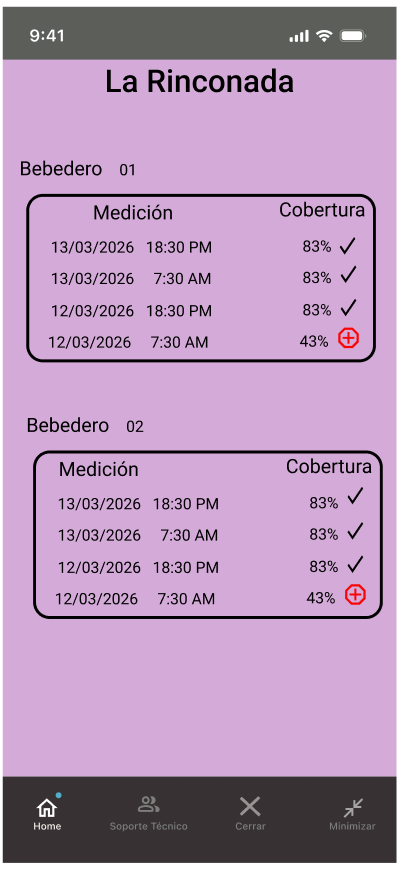

Experiencia de usuario
Diseñar una interfaz clara, accesible y adaptable a los distintos perfiles y dispositivos de uso.
Práctica Profesional Supervisada · Informe de avance
Dosificación automática de cápsulas para el control biológico de nematodos en ovinos
Proyecto en desarrollo · Primera demo realizada
Contexto
El presente informe documenta el avance de la Práctica Profesional Supervisada desarrollada para el Centro de Investigación Veterinaria Tandil (CIVETAN), dependiente de la Facultad de Ciencias Veterinarias de la Universidad Nacional del Centro de la Provincia de Buenos Aires.
El proyecto consiste en el desarrollo de una plataforma web destinada a administrar y monitorear bebederos automáticos utilizados para dosificar cápsulas de hongos en estrategias de control biológico de nematodos parásitos en ovinos. La solución busca centralizar información operativa, facilitar la administración de los actores involucrados y transformar las mediciones de los dispositivos en información útil para el seguimiento y la toma de decisiones.
La PPS contempla una carga de 200 horas. El relevamiento de requisitos fue realizado de manera conjunta por Daniel Teruggi y Matías Spacech. En cuanto al desarrollo técnico, Daniel asumió la implementación del frontend, mientras que Matías tuvo a su cargo el backend. Esta división exige una coordinación permanente para acordar contratos de API, modelos de datos y flujos de usuario.
Alcance
Desarrollar el frontend de una plataforma web integral que permita gestionar bebederos automáticos, visualizar su estado operativo, administrar usuarios y roles, y generar información relevante para el control biológico de nematodos en ovinos.
Diseñar una interfaz clara, accesible y adaptable a los distintos perfiles y dispositivos de uso.
Integrar autenticación mediante JWT y controlar el acceso según los roles de administrador, veterinario y cliente.
Consumir la API REST desarrollada por el backend y representar sus datos con estados de carga y error comprensibles.
Construir paneles y gráficos que permitan analizar la cobertura de cápsulas y el estado de los dispositivos.
Comprensión del problema
La toma de requisitos se realizó de manera conjunta entre Daniel y Matías, con la participación de referentes de CIVETAN, Federica y Manuela. La primera reunión presencial tuvo lugar el y estuvo orientada a comprender el contexto de uso, las necesidades institucionales y los perfiles que interactuarían con la plataforma.
El relevamiento permitió definir una estructura de usuarios con responsabilidades diferenciadas. El administrador requiere una visión global y herramientas de gestión; el veterinario necesita acceder a los clientes que tiene asignados; y el cliente debe consultar sus establecimientos, bebederos y mediciones. Se definió una interfaz móvil para los perfiles de veterinario y cliente, y una interfaz de escritorio para el rol de administrador.
Organización
El plan de trabajo se organizó con un enfoque ágil e iterativo. Las actividades se estructuraron en etapas con objetivos definidos y entregables incrementales, acompañadas de revisiones periódicas. Este esquema permitió ajustar y priorizar las tareas a partir de las devoluciones recibidas durante el desarrollo.
La separación entre frontend y backend permitió trabajar en paralelo, pero hizo necesario acordar las estructuras de datos y los endpoints de integración. En el frontend se adoptó una organización modular por páginas, componentes, contextos, hooks, tipos y utilidades, de modo de favorecer la reutilización y el mantenimiento.
Carga horaria
Debido a que no se llevó un registro diario de las horas, la carga horaria se reconstruyó retrospectivamente a partir del historial de actividad del repositorio, los hitos del proyecto y las tareas realizadas fuera del desarrollo de código. La estimación acumulada asciende a 216 horas.
| Actividad | Horas |
|---|---|
| Diseño y prototipado en Figma | 16 |
| Capacitación en React.js | 20 |
| Desarrollo e integración del frontend | 135 |
| Pruebas y correcciones | 28 |
| Reuniones en CIVETAN | 4 |
| Toma y documentación de requisitos | 3 |
| Coordinación con Matías | 6 |
| Preparación de la primera demo | 2 |
| Elaboración del informe | 2 |
| Total estimado | 216 |
Prototipado
A partir del primer relevamiento se elaboró un bosquejo de la solución. El prototipo permitió organizar la arquitectura de información, representar los flujos principales y disponer de una referencia visual común antes de avanzar con la implementación.
La propuesta fue presentada el en CIVETAN, durante una reunión en la que participaron Federica, Manuela, Daniel y Matías. La instancia permitió contrastar el diseño con las necesidades expresadas y utilizar la devolución recibida como insumo para la evolución de la interfaz.
El primer prototipo representó los flujos centrales de la versión móvil destinada a los perfiles de veterinario y cliente. Las pantallas contemplaban el acceso a la plataforma, la selección de establecimientos, la consulta de bebederos y la visualización de sus mediciones.
Evidencia de diseño
Capturas utilizadas como material de apoyo durante la segunda reunión en CIVETAN y como punto de partida para la evolución de la interfaz.



Implementación
El frontend se desarrolló como una aplicación de página única basada en React y TypeScript, compilada con Vite. La navegación se resolvió mediante React Router y la interfaz se organizó en componentes reutilizables con hojas de estilo modulares. Esta estructura permite separar responsabilidades y adaptar la experiencia a pantallas de escritorio y dispositivos móviles.
La aplicación se comunica con el backend mediante solicitudes HTTP centralizadas. El token JWT se incorpora a
las solicitudes protegidas y la sesión se conserva durante la pestaña activa mediante
sessionStorage. Al iniciar la aplicación, la sesión se valida contra el backend y, ante una
respuesta no autorizada, se eliminan las credenciales locales.
Incremento disponible
Inicio de sesión, persistencia temporal, validación de sesión y rutas protegidas para administrador, veterinario y cliente.
Alta y edición de usuarios, consulta de estados y administración de la relación entre veterinarios y clientes.
Registro, consulta y edición de establecimientos asociados con los clientes de la plataforma.
Listado, creación y edición de dispositivos, incorporación de imágenes y acceso al estado de cada bebedero.
Resumen de usuarios y dispositivos activos e inactivos para facilitar la supervisión administrativa.
Gráficos por cliente, establecimiento o bebedero, con períodos configurables y series reales, promedio, mínimo y máximo.
Flujos específicos para consultar clientes, establecimientos, bebederos y resúmenes desde pantallas pequeñas.
Acceso a un canal de asistencia por WhatsApp desde la interfaz de la aplicación.
Seguimiento
Encuentro en CIVETAN para comprender el problema, identificar los perfiles de usuario y comenzar la definición de requisitos.
Segunda reunión con Federica, Manuela, Matías y Daniel. Se presentó el primer bosquejo elaborado en Figma y se validó la dirección inicial del producto.
Presentación del estado alcanzado por el proyecto y de las funciones integradas hasta la fecha. Esta instancia constituye una demo de avance y no la entrega final.
Situación al 20/08/2026
La solución dispone de una base funcional que integra autenticación, navegación por roles, administración de las entidades principales y visualización de reportes. La primera demo permitió exponer este avance en un contexto real de seguimiento.
Aprendizajes
El desarrollo realizado hasta el momento permitió aplicar conocimientos de análisis de requisitos, diseño de interfaces, programación con React y TypeScript, consumo de APIs REST, autenticación basada en tokens, visualización de datos y muchos conceptos adquiridos a lo largo de estos 2 años en TUDAI. El contexto institucional aportó una problemática concreta y la necesidad de traducir conceptos del dominio veterinario a flujos digitales comprensibles.
La articulación entre frontend y backend fortaleció la comunicación técnica y la definición conjunta de contratos. Asimismo, las reuniones con Federica y Manuela evidenciaron la importancia de validar tempranamente: el prototipo permitió conversar sobre la solución antes de implementarla y la primera demo aportó una nueva instancia para contrastar el producto con su contexto de uso.
Reconocimientos
Quiero agradecer a Federica y Manuela por su predisposición, acompañamiento y participación en las instancias de relevamiento y validación realizadas en CIVETAN. Asimismo, deseo destacar el trabajo conjunto con Matías y su coordinación, fundamentales para lograr la integración de este proyecto. Finalmente, muchas gracias a Juan Toloza por su acompañamiento y por la oportunidad brindada durante el desarrollo de esta PPS.